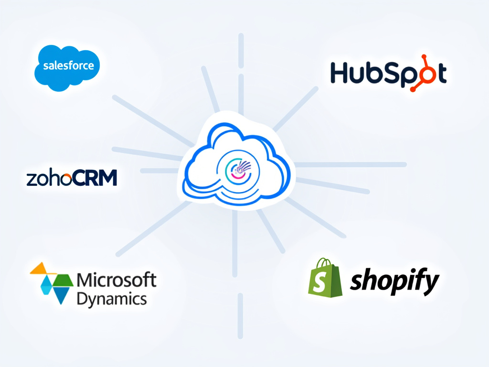

Introduction
What is Clientelify?
- Open-source project for a clienteling mobile application
- Goal: Enable businesses to focus on their core activities without heavy investment
The 7 Core Features
- Client Identification: Quick recognition of clients in-store or online.
- Purchase History: Immediate access to past purchases for personalized recommendations.
- Personalized Notifications: Alerts based on customer preferences and history.
- Preference Management: Saves and uses customer preferences for tailored service.
- Interaction Tracking: Records all interactions for customer relationship tracking.
- Sales Suggestions: Recommends additional products based on behavioral analysis.
- Customer Feedback: Tool to collect and analyze real-time customer feedback.
CRM Integration
CRM Connectors:
- Development of connectors to integrate with leading CRM solutions like Salesforce, HubSpot, etc.
Benefit:
- Synchronization of customer data for a seamless experience.

Marketing Automation Engine
Description:
- Tools to create and manage automated marketing campaigns.
Users:
- Clients or their agencies can create targeted campaigns.
Loyalty Program
Polkadot Blockchain:
- Using blockchain technology to manage a loyalty program.
- Point Transfers: Allows the transfer of loyalty points between partner programs with customer approval.
Advantages:
- Transparency, security, and interoperability of loyalty points.
Standardizing Clienteling
Goal: Make clienteling accessible and affordable for all businesses.
Impact: Cost reduction, improved customer service, focus on core activities.
Conclusion
Summary: Clientelify aims to democratize clienteling through an open-source, cost-effective, and efficient solution.
Call to Action: Join the development, adopt the application, or partner to expand the project.